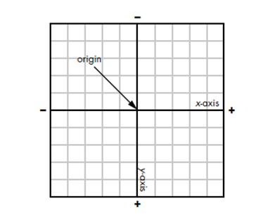
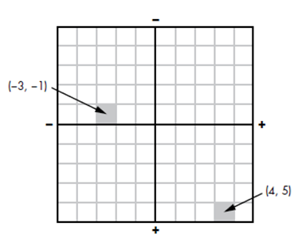

Hoofdstuk 6: text effects
Bij heel wat eigenschappen in CSS3 zijn coördinaten nodig om aan te geven waar je een effect/element wil plaatsen. De linkerbovenhoek (top left) is de oorsprong van waaruit gerekend wordt. Een verschuiving met 2 positieve getallen betekent dat je naar rechtsonder gaat. Een verschuiving met 2 negatieve getallen betekent naar linksboven verschuiven.


Text-shadow
Met de eigenschap text-shadow kun je vlot experimenteren op css3generator.com of css3gen.com. Deze nieuwe eigenschap wordt al ruim ondersteund en er zijn dus geen prefixen meer nodig.
Wat niet in deze generatoren voorzien is (terwijl het wel kan), is het aanbrengen van meerdere tekstschaduwen op 1 element
CSS3
De gebruikte code in dit voorbeeld:
span {
font-size: 5em;
font-family: $lettertypealternatief;
text-shadow:
0 -2px 1px $oranje,
0 -4px 3px lighten(invert($oranje),20%),
0 -6px 6px lighten($donker,30%),
0 -9px 12px $donker;
}